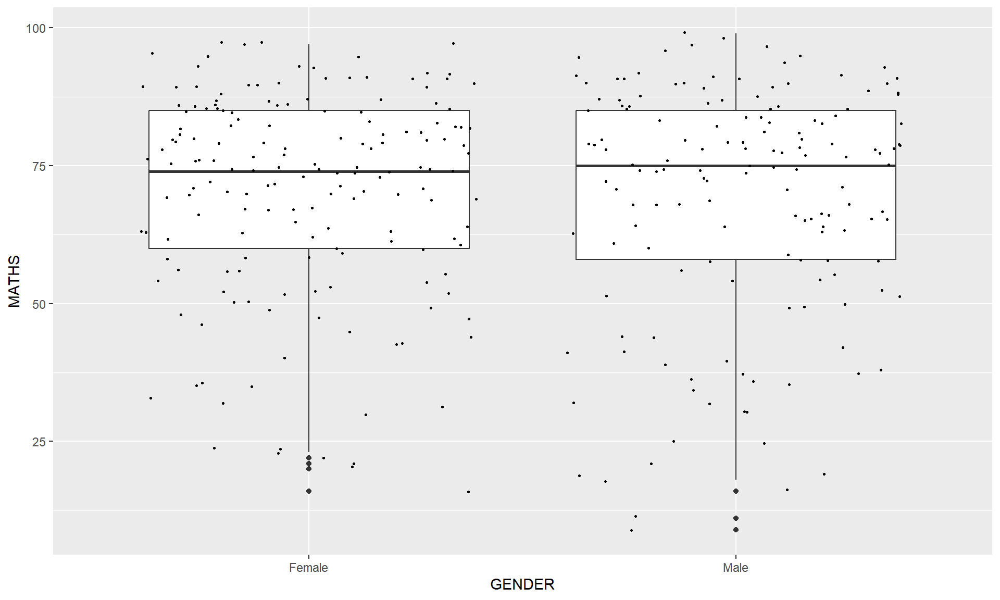

pacman::p_load(tidyverse)Hands-on-Exercise 1: A Layered Grammer of Graphics
Overview
In this hands-on exercise, I explore the foundations of data visualisation in R using ggplot2, which is built on the principles of the Layered Grammar of Graphics. The goal is to understand how each grammatical layer contributes to building meaningful statistical graphics, and to gain hands-on experience creating a variety of chart types.
What I’ll learn
By the end of this exercise I will be able to:
- Describe the key principles of the Grammar of Graphics
- Create a variety of statistical charts using ggplot2
- Customise charts using aesthetics, facets, and themes
Getting Started
Loading the Libraries
To get started, I will use the pacman package to load tidyverse, which includes ggplot2 and other essential data wrangling tools. Using p_load() is convenient as it installs the package if it isn’t already installed, then loads it.
Importing the Data
Next, I import the dataset using read_csv() from the readr package (part of tidyverse). The dataset contains year-end examination scores for a cohort of Primary 3 students, with the following variables:
- Categorical: ID, CLASS, GENDER, RACE
- Continuous: ENGLISH, MATHS, SCIENCE
exam_data <- read_csv("data/Exam_data.csv")Introducing ggplot2
R Graphics vs ggplot2
Before diving into ggplot2, let me first compare it with Base R’s built-in graphics to understand why ggplot2 is preferred.
Using Base R:
hist(exam_data$MATHS)
Now the same histogram using ggplot2:
ggplot(data = exam_data, aes(x = MATHS)) +
geom_histogram(bins = 10,
boundary = 100,
color = "black",
fill = "grey") +
ggtitle("Distribution of Maths scores")
While the Base R version is simpler to write, ggplot2 gives me much more control and flexibility over the visual output. More importantly, it encourages thinking about visualisation as a mapping between data variables and visual properties — a skill that transfers across all kinds of charts.
Grammar of Graphics
ggplot2 is built on Leland Wilkinson’s Grammar of Graphics, which breaks a graphic down into seven distinct layers:
| Layer | Description |
|---|---|
| Data | The dataset being plotted |
| Aesthetics | Maps variables to visual properties like colour, size, position |
| Geometrics | The visual marks — bars, points, lines, etc. |
| Facets | Splits data into small multiples for comparison |
| Statistics | Summarises data (e.g. means, confidence intervals) |
| Coordinates | Defines the plotting plane and axis system |
| Themes | Controls non-data styling like fonts and backgrounds |
Let me now work through each of these layers one by one.
Essential Element 1: Data
I start by calling ggplot() with just the dataset. This gives me a blank canvas — ggplot2 knows what data to use, but hasn’t been told what to draw yet.
ggplot(data = exam_data)
As expected, nothing appears yet except an empty plot area.
Essential Element 2: Aesthetic Mappings
Next, I add an aesthetic mapping using aes() to tell ggplot2 which variable to place on the x-axis. This adds the axis and its label, but still no geometric shapes yet.
ggplot(data = exam_data,
aes(x = MATHS))
Essential Element 3: Geometric Objects
Now things get interesting. Geometric objects (geoms) are the actual visual marks placed on the plot. I will go through several geom types using the exam dataset.
geom_bar
Let me start with a simple bar chart to visualise the count of students by race.
ggplot(data = exam_data,
aes(x = RACE)) +
geom_bar()
geom_dotplot
A dot plot is another way to visualise distribution, where each dot represents one observation. I also turn off the y-axis here since it is not meaningful in this context.
ggplot(data = exam_data,
aes(x = MATHS)) +
geom_dotplot(binwidth = 2.5,
dotsize = 0.5) +
scale_y_continuous(NULL,
breaks = NULL)
geom_histogram
A histogram is one of the most common ways to visualise the distribution of a continuous variable. Here I plot the distribution of Maths scores with 20 bins.
ggplot(data = exam_data,
aes(x = MATHS)) +
geom_histogram(bins = 20,
color = "black",
fill = "light blue")
I can also map a categorical variable like GENDER to the fill aesthetic to see the distribution broken down by gender.
ggplot(data = exam_data,
aes(x = MATHS,
fill = GENDER)) +
geom_histogram(bins = 20,
color = "grey30")
geom_density
A kernel density plot is a smoothed alternative to the histogram, useful for continuous data from an underlying smooth distribution.
ggplot(data = exam_data,
aes(x = MATHS)) +
geom_density()
By mapping GENDER to the colour aesthetic, I can compare the distributions of Maths scores between male and female students.
ggplot(data = exam_data,
aes(x = MATHS,
colour = GENDER)) +
geom_density()
geom_boxplot
Box plots are great for visualising the five-number summary (minimum, Q1, median, Q3, maximum) and identifying outliers. Here I compare Maths scores across genders.
ggplot(data = exam_data,
aes(y = MATHS,
x = GENDER)) +
geom_boxplot()
I can also add notches to the box plot to help assess whether the medians between groups are statistically different. Non-overlapping notches suggest the medians differ.
ggplot(data = exam_data,
aes(y = MATHS,
x = GENDER)) +
geom_boxplot(notch = TRUE)
geom_violin
Violin plots combine a box plot with a density plot, making it easier to compare distributions across groups visually.
ggplot(data = exam_data,
aes(y = MATHS,
x = GENDER)) +
geom_violin()
geom_point
Scatter plots are useful for exploring relationships between two continuous variables. Here I look at whether Maths and English scores are correlated.
ggplot(data = exam_data,
aes(x = MATHS,
y = ENGLISH)) +
geom_point()
Combining Geoms
One of the strengths of ggplot2 is that geoms can be layered on top of each other. Here I overlay individual data points on a box plot using geom_point() with jitter to avoid overplotting.
ggplot(data = exam_data,
aes(y = MATHS,
x = GENDER)) +
geom_boxplot() +
geom_point(position = "jitter",
size = 0.5)
Essential Element 4: Statistics
Statistical transformations let me summarise data directly within the plot. Here I add the mean score as a red point on top of the box plots using stat_summary().
ggplot(data = exam_data,
aes(y = MATHS, x = GENDER)) +
geom_boxplot() +
stat_summary(geom = "point",
fun = "mean",
colour = "red",
size = 4)
I can also use geom_smooth() to add a best-fit curve to a scatter plot. The default method is loess (locally weighted smoothing).
ggplot(data = exam_data,
aes(x = MATHS, y = ENGLISH)) +
geom_point() +
geom_smooth(linewidth = 0.5)
Alternatively, I can switch to a linear regression line by specifying method = lm.
ggplot(data = exam_data,
aes(x = MATHS, y = ENGLISH)) +
geom_point() +
geom_smooth(method = lm,
linewidth = 0.5)
Essential Element 5: Facets
Facetting allows me to split the data into subsets and display each as a separate panel — great for comparing distributions across groups.
facet_wrap
Here I use facet_wrap() to plot a histogram of Maths scores for each class, arranged in a 2D grid automatically.
ggplot(data = exam_data,
aes(x = MATHS)) +
geom_histogram(bins = 20) +
facet_wrap(~ CLASS)
facet_grid
facet_grid() lays panels out in a strict row-column matrix. Below I use it to display histograms across classes in a single row.
ggplot(data = exam_data,
aes(x = MATHS)) +
geom_histogram(bins = 20) +
facet_grid(~ CLASS)
Essential Element 6: Coordinates
Coordinate systems control how the axes are oriented and scaled.
coord_flip
By default, bar charts are vertical. I can flip the axes using coord_flip() to make it horizontal, which is often more readable when category labels are long.
ggplot(data = exam_data,
aes(x = RACE)) +
geom_bar() +
coord_flip()
coord_cartesian
When comparing Maths and English scores on a scatter plot, both axes should have the same range for a fair visual comparison. I use coord_cartesian() to fix both axes to 0–100.
ggplot(data = exam_data,
aes(x = MATHS, y = ENGLISH)) +
geom_point() +
geom_smooth(method = lm,
linewidth = 0.5) +
coord_cartesian(xlim = c(0, 100),
ylim = c(0, 100))
Essential Element 7: Themes
Themes let me change the overall look and feel of the plot without touching the data. Let me compare three built-in themes.
theme_gray() — the default ggplot2 theme:
ggplot(data = exam_data,
aes(x = RACE)) +
geom_bar() +
coord_flip() +
theme_gray()
theme_classic() — a cleaner look with no gridlines:
ggplot(data = exam_data,
aes(x = RACE)) +
geom_bar() +
coord_flip() +
theme_classic()
theme_minimal() — minimal styling, my personal preference for clean academic outputs:
ggplot(data = exam_data,
aes(x = RACE)) +
geom_bar() +
coord_flip() +
theme_minimal()
References
- Hadley Wickham (2023) ggplot2: Elegant Graphics for Data Analysis. Online 3rd edition.
- Winston Chang (2013) R Graphics Cookbook, 2nd edition.
- Healy, Kieran (2019) Data Visualization: A practical introduction.